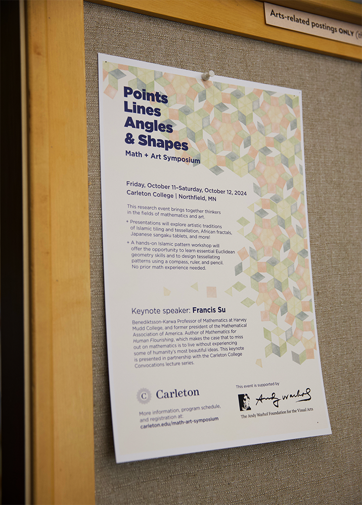
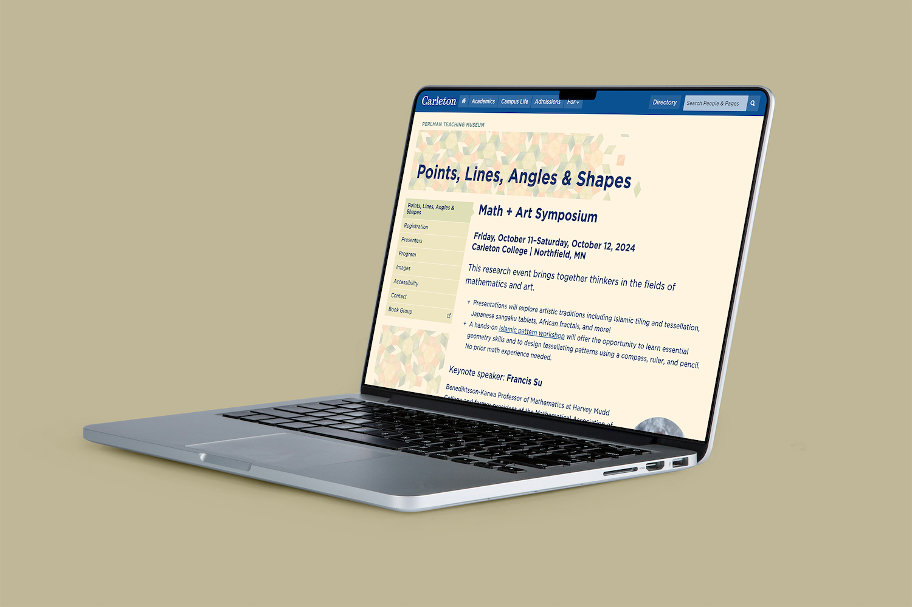

Procreate - Adobe InDesign
I was asked to create a logo, poster, and digital banner for Carleton College's Math + Art Symposium titled Points, Lines, Angles, & Shapes.
The brief asked for the incorporation of a pattern inspired by historic geometric tiling. The pattern I designed is made up of penrose tiles and the kite shape that makes up an aperiodic monotile, commonly known as "the hat."

